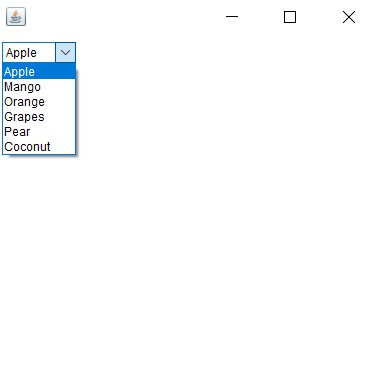

10. Create a simple AWT application that displays a Choice with FlowLayout manager.
import java.awt.*;
import java.awt.event.*;
class MyFrame extends Frame
{
Choice ch = new Choice();
MyFrame()
{
setBounds(100,100,400,400);
setLayout(new FlowLayout(FlowLayout.LEFT));
ch.setBounds(100,100,100,50);
ch.addItem("Apple");
ch.addItem("Mango");
ch.addItem("Orange");
ch.addItem("Grapes");
ch.addItem("Pear");
ch.addItem("Coconut");
add(ch);
addWindowListener(new WindowAdapter() {
public void windowClosing(WindowEvent e)
{
System.exit(1);
}
});
setVisible(true);
}
}
class Main {
public static void main(String[] args) {
new MyFrame();
}
}
OUTPUT
